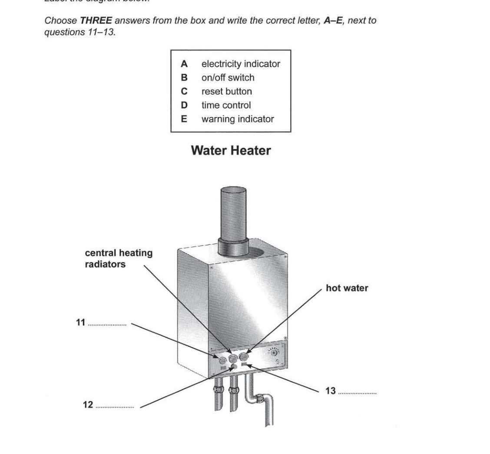

Cambridge IELTS 9
Time: approx. 30 minutes
Instructions
Digital recreation of Cambridge IELTS Listening Test 4.
Type answers in the gaps. Click options for multiple choice.
Print this page for paper-like practice.
Questions 1–4: Complete the table below. Write ONE WORD ONLY for each answer. Questions 5–6: Choose TWO letters, A–E. Questions 7–10: Complete the table below. Write NO MORE THAN TWO WORDS AND/OR A NUMBER for each answer.
Questions 1–4
Complete the table below. Write ONE WORD ONLY for each answer.
| Name of centre | Doctor's name | Advantage |
|---|---|---|
The Harvey Clinic |
Dr Green |
Especially good with1 |
The2Health Practice |
Dr Fuller |
Offers3appointments |
The Shore Lane Health Centre |
Dr4 |
Questions 7–10
Complete the table below. Write NO MORE THAN TWO WORDS AND/OR A NUMBER for each answer.
| Subject of talk | Date/time | Location | Notes |
|---|---|---|---|
Giving up smoking |
25th Feb at 7pm |
Room 4 |
Useful for people with asthma or7problems |
Healthy eating |
1st March at 5pm |
The8(Shore Lane) |
Anyone welcome |
Avoiding injuries during exercise |
9 |
Room 6 |
For all10 |
Click to select (max 2)
Questions 11–13: Label the diagram. Questions 14–18: Matching. Questions 19–20: Complete the notes.

Questions 21–22: Choose A, B or C. Questions 23–25: Complete the sentences below. Write ONE WORD ONLY for each answer. Questions 26–30: Complete the notes below. Write NO MORE THAN THREE WORDS AND/OR A NUMBER for each answer.
Questions 31–36: Choose A, B or C. Questions 37–40: Complete the table. Write ONE WORD ONLY for each answer.
| Animals | Reason for population increase in gardens | Comments |
|---|---|---|
37 |
Suitable stretches of water |
Massive increase in urban areas |
Hedgehogs |
Safe from38when in cities |
Easy to39them accurately |
Song thrushes |
• A variety of40to eat• More nesting places available |
Large survey starting soon |
IELTS Listening Test 4 • Cambridge IELTS 9 • Practice recreation (content from official PDF)